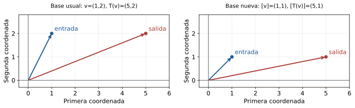
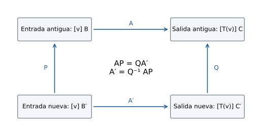
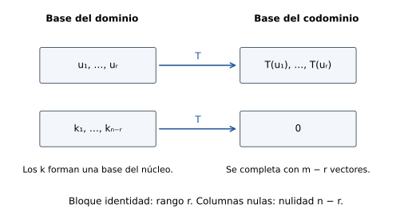

Capítulo 12. Matrices de transformaciones y cambio de base
Álgebra para matemáticos · Tomo II
← Capítulo 11 · Índice del tomo II · Obra completa · Capítulo 13 →
La transformación \(T(x,y)=(x+2y,y)\) deja fijos los vectores horizontales y desplaza cada punto en una cantidad horizontal que depende de su altura. En la base usual del plano, sus columnas son \((1,0)\) y \((2,1)\), las imágenes de los dos vectores básicos. Podemos recuperar toda la transformación a partir de ellas: la entrada \((x,y)=xe_1+ye_2\) se convierte en \(xT(e_1)+yT(e_2)\).
Si medimos los vectores usando la base \(\mathcal B'=((1,0),(0,2))\), el segundo vector básico se transforma en \((4,2)=4(1,0)+(0,2)\). Las columnas pasan a ser \((1,0)\) y \((4,1)\). La regla sobre los puntos del plano permanece intacta, aunque una de las entradas de su matriz se ha duplicado. Para la misma entrada física \(v=(1,2)\) obtenemos
\[ [v]_{\mathcal E}=\begin{pmatrix}1\\2\end{pmatrix},\qquad [T(v)]_{\mathcal E}=\begin{pmatrix}5\\2\end{pmatrix}; \qquad [v]_{\mathcal B'}=\begin{pmatrix}1\\1\end{pmatrix},\qquad [T(v)]_{\mathcal B'}=\begin{pmatrix}5\\1\end{pmatrix}. \]
Dos cálculos distintos describen la misma entrada y la misma salida. El cambio de matriz registra el cambio de unidades con que describimos ambas. La dificultad consiste en mantener juntas esas elecciones: una columna sin su base de salida y un vector de números sin su base de entrada dejan incompleta la información.

Trabajaremos sobre un cuerpo conmutativo \(\mathbb F\), con espacios de dimensión finita y bases ordenadas. Las coordenadas serán columnas. Los ejemplos con fracciones se entienden sobre \(\mathbb R\) salvo indicación contraria. Utilizaremos la determinación de una aplicación por sus valores en una base (C08), núcleo e imagen (C09), los isomorfismos de coordenadas y matrices de transición (C10), y las descomposiciones de C11. No necesitaremos determinantes ni valores propios.
12.1. Las imágenes de una base se convierten en columnas
Sean \(\mathcal B=(b_1,\ldots,b_n)\) una base de \(V\) y \(\mathcal C=(c_1,\ldots,c_m)\) una base de \(W\). Para describir \(T:V\to W\) basta conocer los vectores \(T(b_j)\), pero esos vectores todavía pertenecen a \(W\). Al escribirlos en la base \(\mathcal C\) obtenemos números que podemos organizar en una matriz.
Definición 12.1. La matriz de \(T\) respecto de \(\mathcal B\) y \(\mathcal C\) es
\[ [T]_{\mathcal C\leftarrow\mathcal B} =\bigl([T(b_1)]_{\mathcal C}\ \cdots\ [T(b_n)]_{\mathcal C}\bigr). \]
Tiene \(m\) filas y \(n\) columnas. La base a la derecha de la flecha corresponde al dominio; la de la izquierda, al codominio. Si \(V=W\) y se emplea una misma base \(\mathcal B\) para ambos, abreviamos \([T]_{\mathcal B}=[T]_{\mathcal B\leftarrow\mathcal B}\).
La entrada \(a_{ij}\) de esta matriz es el coeficiente de \(c_i\) en \(T(b_j)\). El índice de columna indica qué vector se transforma; el de fila, en qué dirección del codominio se mide su imagen. Esta lectura explica la forma rectangular sin exigir que \(V\) y \(W\) sean espacios de tuplas.
Teorema 12.1 (identidad de representación). Si \(A=[T]_{\mathcal C\leftarrow\mathcal B}\), entonces
\[ [T(v)]_{\mathcal C}=A[v]_{\mathcal B}\qquad(v\in V). \]
Es la única matriz con esta propiedad. Recíprocamente, toda matriz \(A\in M_{m\times n}(\mathbb F)\) representa una única transformación \(V\to W\) con las bases fijadas.
Demostración. Escribamos \(v=\sum_jx_jb_j\). La linealidad de \(T\) y del isomorfismo de coordenadas da
\[ [T(v)]_{\mathcal C}=\sum_{j=1}^nx_j[T(b_j)]_{\mathcal C}. \]
El producto de una matriz por una columna es la combinación de sus columnas con esos coeficientes, de modo que el último miembro es \(A[v]_{\mathcal B}\). Si otra matriz cumple la misma identidad, aplicarla a \(v=b_j\) muestra que su columna \(j\) debe ser \([T(b_j)]_{\mathcal C}\); queda probada la unicidad.
Para construir \(T\) a partir de \(A\), interpretamos la columna \(j\) como coordenadas de un vector \(w_j\in W\) y asignamos \(T(b_j)=w_j\). C08 proporciona una única extensión lineal a todo \(V\). La definición de matriz recupera exactamente \(A\). \(\square\)
Si \(\kappa_{\mathcal B}(v)=[v]_{\mathcal B}\) y \(\kappa_{\mathcal C}(w)=[w]_{\mathcal C}\), el teorema expresa
\[ L_A=\kappa_{\mathcal C}\circ T\circ\kappa_{\mathcal B}^{-1}, \qquad L_A(x)=Ax. \]
Esta igualdad de funciones explica en qué sentido una matriz representa una transformación: permite transportar el problema a columnas, hacer allí el cálculo y reconstruir la salida en \(W\).
Por ejemplo, consideremos la derivación formal \(D:P_2(\mathbb R)\to P_1(\mathbb R)\), dada por \(D(a+bt+ct^2)=b+2ct\). Para \(\mathcal B=(1,t,t^2)\) y \(\mathcal C=(1,t)\),
\[ [D]_{\mathcal C\leftarrow\mathcal B} =\begin{pmatrix}0&1&0\\0&0&2\end{pmatrix}. \]
La primera columna es cero porque la derivada formal de \(1\) es cero; la última contiene las coordenadas de \(2t\). Al multiplicar por \((a,b,c)^{\mathsf T}\) obtenemos \((b,2c)^{\mathsf T}\), que describe el polinomio de salida en una base distinta y de otra longitud. La matriz no tiene por qué ser cuadrada. Tampoco estamos suponiendo resultados de cálculo diferencial: \(D\) se definió como una operación algebraica en coeficientes.
Si alguno de los espacios es el espacio cero, su base es la lista vacía. Adoptamos matrices de tamaño \(m\times0\) o \(0\times n\) y sumas vacías; la identidad de representación sigue describiendo la única aplicación posible cuando el dominio es cero, y la aplicación nula cuando el codominio es cero.
12.2. Componer exige que coincidan las coordenadas intermedias
Sean \(T:V\to W\) y \(S:W\to Z\). Si conocemos \([v]_{\mathcal B}\), la matriz de \(T\) produce coordenadas en \(\mathcal C\). Para aplicar después la matriz de \(S\), ésta debe recibir coordenadas en esa misma base de \(W\). La compatibilidad de tamaños sólo controla la cantidad de números; el nombre de la base controla su significado.
Teorema 12.2 (operaciones y composición). Fijadas bases \(\mathcal B,\mathcal C,\mathcal D\) de \(V,W,Z\), se cumplen
\[ [\alpha T+\beta U]_{\mathcal C\leftarrow\mathcal B} =\alpha[T]_{\mathcal C\leftarrow\mathcal B}+\beta[U]_{\mathcal C\leftarrow\mathcal B}, \qquad [S\circ T]_{\mathcal D\leftarrow\mathcal B} =[S]_{\mathcal D\leftarrow\mathcal C}[T]_{\mathcal C\leftarrow\mathcal B}, \]
donde \(T,U:V\to W\). Además, \([I_V]_{\mathcal B}=I_n\). Si \(T\) es un isomorfismo,
\[ [T^{-1}]_{\mathcal B\leftarrow\mathcal C} =([T]_{\mathcal C\leftarrow\mathcal B})^{-1}. \]
Demostración. La columna \(j\) de la matriz de \(\alpha T+\beta U\) se obtiene tomando coordenadas de \(\alpha T(b_j)+\beta U(b_j)\); la linealidad de las coordenadas da la primera fórmula. Para la composición, aplicamos dos veces el teorema 12.1:
\[ [S(T(v))]_{\mathcal D} =[S]_{\mathcal D\leftarrow\mathcal C}[T(v)]_{\mathcal C} =[S]_{\mathcal D\leftarrow\mathcal C}[T]_{\mathcal C\leftarrow\mathcal B}[v]_{\mathcal B}. \]
La unicidad de representación identifica la matriz del compuesto. Las imágenes \(I_V(b_j)=b_j\) tienen coordenadas \(e_j\), de donde resulta \(I_n\). Al representar \(T^{-1}T=I_V\) y \(TT^{-1}=I_W\) obtenemos ambos productos identidad, y por tanto la fórmula de la inversa. \(\square\)
La correspondencia \(T\mapsto[T]_{\mathcal C\leftarrow\mathcal B}\) es así un isomorfismo entre los espacios vectoriales \(\operatorname{Hom}(V,W)\) y \(M_{m\times n}(\mathbb F)\). Su biyectividad procede del teorema 12.1 y su linealidad del 12.2. En particular, \(\dim\operatorname{Hom}(V,W)=mn\): las matrices con una única entrada uno forman una base, y cada una corresponde al mapa que lleva un vector básico a un vector básico prescrito y anula los demás.
Cuando se representa un operador usando una misma base, la compatibilidad está asegurada para cualquier número de composiciones. De \([T^2]_{\mathcal B}=A^2\) y una inducción resulta \([T^k]_{\mathcal B}=A^k\) para todo entero \(k\ge0\). Si entrada y salida usan bases distintas, multiplicar la matriz por sí misma carece en general de esa interpretación, incluso si es cuadrada.
12.3. Cambiar dos bases: seguir la entrada y la salida
C10 construyó la matriz \(P_{\mathcal B\leftarrow\mathcal B'}\) cuyas columnas son \([b'_j]_{\mathcal B}\). Satisface
\[ [v]_{\mathcal B}=P_{\mathcal B\leftarrow\mathcal B'}[v]_{\mathcal B'}. \]
Es también la matriz de la identidad cuando el dominio se describe en \(\mathcal B'\) y el codominio en \(\mathcal B\). Para evitar ambigüedades, fijaremos \(P=P_{\mathcal B\leftarrow\mathcal B'}\) y \(Q=P_{\mathcal C\leftarrow\mathcal C'}\). Ambas matrices convierten coordenadas nuevas en antiguas.
Para calcular la salida en las bases nuevas, primero convertimos la entrada nueva en antigua mediante \(P\), aplicamos \(A=[T]_{\mathcal C\leftarrow\mathcal B}\) y convertimos la salida antigua en nueva mediante \(Q^{-1}\). Esta sucesión determina el orden de los factores.
Teorema 12.3 (cambio de bases). Con las convenciones anteriores,
\[ A'=[T]_{\mathcal C'\leftarrow\mathcal B'}=Q^{-1}AP. \]
Demostración. Para cada \(v\in V\),
\[ [T(v)]_{\mathcal C'}=Q^{-1}[T(v)]_{\mathcal C} =Q^{-1}A[v]_{\mathcal B} =Q^{-1}AP[v]_{\mathcal B'}. \]
El teorema 12.1 identifica \(Q^{-1}AP\) como la matriz pedida. \(\square\)

En el ejemplo de la derivación, cambiemos a \(\mathcal B'=(1,1+t,(1+t)^2)\) y \(\mathcal C'=(1,1+t)\). Los vectores nuevos escritos en las bases antiguas dan
\[ P=\begin{pmatrix}1&1&1\\0&1&2\\0&0&1\end{pmatrix},\qquad Q=\begin{pmatrix}1&1\\0&1\end{pmatrix}. \]
Entonces
\[ AP=\begin{pmatrix}0&1&2\\0&0&2\end{pmatrix},\qquad Q^{-1}AP=\begin{pmatrix}0&1&0\\0&0&2\end{pmatrix}. \]
La matriz final coincide numéricamente con la inicial. La comprobación directa explica esa coincidencia: \(D(1)=0\), \(D(1+t)=1\) y \(D((1+t)^2)=2(1+t)\). La forma de la regla de derivación se conserva al trasladar la variable, aunque las bases sean otras. Una matriz igual no obliga a que las bases coincidan; una matriz diferente tampoco obliga a que la transformación cambie.
Si sólo cambia la base del dominio, la fórmula se reduce a \(A'=AP\). Cada columna nueva es la imagen de una combinación de vectores básicos antiguos. Si sólo cambia la base del codominio, resulta \(A'=Q^{-1}A\): los vectores imagen siguen siendo los mismos y sólo cambia cómo se describen. Confundir estos dos actos lleva a colocar inversas donde no corresponden.
12.4. Un operador en dos bases: semejanza
Cuando \(T:V\to V\) se representa con una misma base a ambos lados, cambiar esa base obliga a usar la misma transición en entrada y salida. La fórmula general se especializa con \(Q=P\).
Definición 12.2. Dos matrices \(A,A'\in M_n(\mathbb F)\) son semejantes si existe \(P\in M_n(\mathbb F)\) invertible tal que \(A'=P^{-1}AP\).
Proposición 12.4. Las matrices de un mismo operador en dos bases son semejantes. Recíprocamente, si \(A'=P^{-1}AP\) y \(A=[T]_{\mathcal B}\), existe una base \(\mathcal B'\) tal que \(P=P_{\mathcal B\leftarrow\mathcal B'}\) y \(A'=[T]_{\mathcal B'}\). La semejanza es una relación de equivalencia.
Demostración. La primera afirmación es el teorema 12.3 con igual transición en ambos espacios. Para la recíproca, definimos \(b'_j\) como el vector cuyas coordenadas en \(\mathcal B\) son la columna \(j\) de \(P\). Como \(P\) es invertible, sus columnas son una base de \(\mathbb F^n\); el isomorfismo de coordenadas las transporta a una base de \(V\). Su matriz de transición es \(P\), y el teorema de cambio de bases da \(A'\).
La reflexividad usa \(P=I\). Si \(A'=P^{-1}AP\), entonces \(A=P A'P^{-1}\), que da simetría. Si además \(A''=R^{-1}A'R\), sustituyendo se obtiene \(A''=(PR)^{-1}A(PR)\); la invertibilidad de \(PR\) prueba transitividad. \(\square\)
La cizalla inicial tiene matrices
\[ A=\begin{pmatrix}1&2\\0&1\end{pmatrix},\quad P=\begin{pmatrix}1&0\\0&2\end{pmatrix},\quad P^{-1}AP=\begin{pmatrix}1&4\\0&1\end{pmatrix}. \]
El orden se puede comprobar con \(v=(1,2)\), cuyas coordenadas nuevas son \((1,1)^{\mathsf T}\). El producto por la matriz nueva da \((5,1)^{\mathsf T}\) y la reconstrucción mediante \(P\) devuelve \((5,2)^{\mathsf T}=T(v)\). La expresión \(PAP^{-1}\) correspondería a la convención inversa para la transición; con nuestro \(P\) no representa el cambio pedido.
Un ejemplo distinto muestra por qué vale la pena buscar una base adecuada. Sea \(T(x,y)=(y,x)\) y tomemos \(b'_1=(1,1)\), \(b'_2=(1,-1)\). Sobre \(\mathbb R\) forman una base, y sus imágenes son \(T(b'_1)=b'_1\), \(T(b'_2)=-b'_2\). Por ello
\[ [T]_{\mathcal E}=\begin{pmatrix}0&1\\1&0\end{pmatrix},\qquad [T]_{\mathcal B'}=\begin{pmatrix}1&0\\0&-1\end{pmatrix}. \]
La base separa dos comportamientos que la fórmula inicial mezclaba: una dirección permanece fija y la otra invierte su signo. Esta construcción requiere que \(2\ne0\) en el cuerpo; en característica dos los dos vectores propuestos coinciden y dejan de ser una base.
12.5. El rango y los sistemas sobreviven al cambio de descripción
El núcleo de \(A\) está formado por columnas, mientras que el núcleo de \(T\) está formado por vectores de \(V\). El isomorfismo de coordenadas permite compararlos sin confundirlos.
Proposición 12.5. Para \(A=[T]_{\mathcal C\leftarrow\mathcal B}\),
\[ \kappa_{\mathcal B}(\ker T)=\ker L_A,\qquad \kappa_{\mathcal C}(\operatorname{im}T)=\operatorname{im}L_A. \]
En particular, \(\operatorname{rg}A=\operatorname{rg}T\) y \(\operatorname{nul}A=\dim\ker T\). Multiplicar una matriz a izquierda o derecha por una matriz invertible conserva su rango.
Demostración. La identidad \(T(v)=0\) equivale a \([T(v)]_{\mathcal C}=0\), que por representación equivale a \(A[v]_{\mathcal B}=0\). La biyectividad de \(\kappa_{\mathcal B}\) da la primera igualdad. Cada vector de la imagen de \(T\) es \(T(v)\) y su columna es \(A[v]_{\mathcal B}\); como las coordenadas de \(v\) recorren todo \(\mathbb F^n\), obtenemos la segunda igualdad. Los isomorfismos preservan dimensión por C10.
Si \(P\) es invertible, las columnas \(Px\) recorren todo el dominio de \(A\), de modo que \(\operatorname{im}(AP)=\operatorname{im}A\). Si \(R\) es invertible, \(\operatorname{im}(RA)=R(\operatorname{im}A)\) tiene la misma dimensión. Esto prueba la última afirmación. \(\square\)
Para \(A'=Q^{-1}AP\), las fórmulas más precisas son
\[ \ker A'=P^{-1}(\ker A),\qquad \operatorname{im}A'=Q^{-1}(\operatorname{im}A). \]
Los subespacios de columnas pueden cambiar de posición; sus dimensiones permanecen. También se conserva toda la información de una ecuación \(T(v)=w\). Si \(b=[w]_{\mathcal C}\) y \(b'=[w]_{\mathcal C'}=Q^{-1}b\), las soluciones de \(Ax=b\) corresponden biyectivamente a las de \(A'x'=b'\) mediante \(x=Px'\). Cambiar la matriz y mantener sin conversión el término independiente puede producir un problema distinto.
12.6. Dos bases independientes permiten una forma más simple
Una transformación rectangular no admite una misma base de entrada y salida. Incluso para un operador podemos decidir usar bases distintas. Esa libertad es mayor que la permitida por semejanza.
Definición 12.3. Dos matrices del mismo tamaño \(m\times n\) son equivalentes por dos bases si \(A'=Q^{-1}AP\) para matrices invertibles \(P\) y \(Q\) de órdenes \(n\) y \(m\). Esta equivalencia permite operaciones invertibles de filas y de columnas; es más amplia que la equivalencia por filas de C02.
Teorema 12.6 (clasificación por rango). Si \(T:V\to W\) tiene rango \(r\), existen bases de \(V\) y \(W\) en las que su matriz es
\[ J_r=\begin{pmatrix}I_r&0\\0&0\end{pmatrix}_{m\times n}. \]
Dos matrices del mismo tamaño son equivalentes por dos bases si y sólo si tienen igual rango.
Demostración. Tomemos una base \(k_1,\ldots,k_{n-r}\) del núcleo y extendámosla con vectores \(u_1,\ldots,u_r\) hasta una base de \(V\), usando rango-nulidad. Las imágenes \(T(u_1),\ldots,T(u_r)\) forman una base de la imagen: cualquier \(v\) se expresa mediante los \(u_i\) y los \(k_j\), y al aplicar \(T\) desaparecen los últimos; si una combinación de \(T(u_i)\) se anula, la combinación correspondiente de \(u_i\) pertenece al núcleo, y la independencia de la base extendida anula sus coeficientes.
Ordenamos la base del dominio como \((u_1,\ldots,u_r,k_1,\ldots,k_{n-r})\). Extendemos \((T(u_1),\ldots,T(u_r))\) a una base de \(W\). Las primeras \(r\) columnas de la matriz son entonces los primeros vectores usuales y todas las demás columnas son cero. Es exactamente \(J_r\).
Si dos matrices son equivalentes, la proposición 12.5 les da igual rango. Si tienen el mismo rango, ambas pueden llevarse a la misma \(J_r\). Invirtiendo el cambio de bases de una y componiéndolo con el de la otra se obtiene una equivalencia entre ambas. \(\square\)

Para \(T(x,y,z)=(x+y,y+z)\), elegimos \(u_1=e_1\), \(u_2=e_3\) y \(k=(-1,1,-1)\). El vector \(k\) genera el núcleo y los tres son independientes: en \(au_1+bu_2+ck=0\), la segunda coordenada da \(c=0\) y después \(a=b=0\). Sus imágenes son \(e_1,e_2,0\), por lo que la matriz en esas bases es
\[ \begin{pmatrix}1&0&0\\0&1&0\end{pmatrix}. \]
La clasificación por rango resuelve completamente la equivalencia por dos bases. No resuelve la semejanza. Sobre \(\mathbb R\), \(I_2\) y \(2I_2\) tienen rango dos y son equivalentes por dos bases, pero cualquier conjugado de \(I_2\) sigue siendo \(I_2\). La libertad de modificar la base de salida con independencia de la de entrada borra información que un operador conserva al iterarse.
12.7. Una suma diagonal que no depende de la base
La cizalla cambió una entrada fuera de la diagonal; el intercambio de coordenadas cambió incluso sus entradas diagonales. En ambos ejemplos la suma de la diagonal permaneció. Para demostrar que sucede con cualquier cambio de base necesitamos una propiedad que relacione esa suma con el producto matricial.
Definición 12.4. La traza de \(A=(a_{ij})\in M_n(\mathbb F)\) es \(\operatorname{tr}A=\sum_{i=1}^na_{ii}\). Para \(n=0\) la suma vale cero.
Lema 12.7 (intercambio de dos factores). Si \(A\in M_{m\times n}(\mathbb F)\) y \(B\in M_{n\times m}(\mathbb F)\), entonces
\[ \operatorname{tr}(AB)=\operatorname{tr}(BA). \]
Demostración. La entrada diagonal \(i\) de \(AB\) es \(\sum_{j=1}^na_{ij}b_{ji}\). Por tanto,
\[ \operatorname{tr}(AB)=\sum_{i=1}^m\sum_{j=1}^na_{ij}b_{ji} =\sum_{j=1}^n\sum_{i=1}^mb_{ji}a_{ij}=\operatorname{tr}(BA). \]
Se reordenan sumas finitas y se usa la conmutatividad de escalares. No se afirma que las matrices \(AB\) y \(BA\) sean iguales: pueden tener tamaños distintos. \(\square\)
Teorema 12.8 (traza de un operador). Si \(A'=P^{-1}AP\), entonces \(\operatorname{tr}A'=\operatorname{tr}A\). Por consiguiente, para un operador \(T:V\to V\) está bien definido
\[ \operatorname{tr}T=\operatorname{tr}[T]_{\mathcal B}, \]
con cualquier base \(\mathcal B\) de \(V\). La traza es lineal y satisface \(\operatorname{tr}(ST)=\operatorname{tr}(TS)\) para operadores de \(V\).
Demostración. Aplicamos el lema a los dos factores \(P^{-1}A\) y \(P\):
\[ \operatorname{tr}(P^{-1}AP)=\operatorname{tr}(PP^{-1}A)=\operatorname{tr}A. \]
La proposición 12.4 asegura que dos elecciones de base producen matrices semejantes, de donde resulta la independencia. Sumar las diagonales de \(\alpha A+\beta B\) da \(\alpha\operatorname{tr}A+\beta\operatorname{tr}B\); los teoremas 12.1–12.2 trasladan esta propiedad a operadores. La última identidad procede del lema y de la fórmula de composición en una misma base. \(\square\)
La invariancia exige una misma base para entrada y salida. La identidad de \(\mathbb R\) tiene matriz \((1)\) usando la misma base, pero tiene matriz \((2)\) si el vector básico de entrada es \(2\) y el de salida es \(1\). La traza de esa representación mixta no es la traza del operador. También sería ilegítimo definirla para una matriz rectangular tomando sólo las posiciones diagonales disponibles y esperar las mismas propiedades de invariancia.
La traza tampoco clasifica la semejanza. Las matrices \(0_2\) y \(\begin{pmatrix}0&1\\0&0\end{pmatrix}\) tienen traza cero y rangos distintos. Incluso agregar el rango no basta: \(I_2\) y \(\begin{pmatrix}1&1\\0&1\end{pmatrix}\) tienen ambos traza dos y rango dos sobre \(\mathbb R\), mientras todo conjugado de \(I_2\) es \(I_2\). Un invariante proporciona una obstrucción: si difiere, no hay semejanza. La coincidencia de un invariante no asegura que exista un cambio de base.
En característica positiva la traza es un elemento del cuerpo. Si \(E^2=E\), C11 da \(V=\operatorname{im}E\oplus\ker E\). En una base adaptada, \([E]=\operatorname{diag}(I_r,0)\), de modo que \(\operatorname{tr}E=r\,1_{\mathbb F}\). Sobre \(\mathbb R\) recupera el rango entero. Sobre \(\mathbb F_p\) sólo registra su residuo módulo \(p\); la identidad de \(\mathbb F_p^p\) tiene traza cero y rango \(p\). La definición es válida en ambos casos, pero su capacidad para distinguir dimensiones cambia.
12.8. Descomposiciones que producen bloques
Una suma directa \(V=U\oplus K\) permite concatenar bases. Si un operador preserva ambos subespacios, sus columnas correspondientes a \(U\) no tienen componente en \(K\), y las correspondientes a \(K\) no tienen componente en \(U\). Esa observación convierte la descomposición de C11 en un cálculo por bloques.
Proposición 12.9. Sea \(V=U\oplus K\) y supongamos que \(T(U)\subseteq U\) y \(T(K)\subseteq K\). En la base concatenada \(\mathcal B=(\mathcal U,\mathcal K)\),
\[ [T]_{\mathcal B}=\begin{pmatrix}A&0\\0&D\end{pmatrix}, \qquad A=[T|_U]_{\mathcal U},\quad D=[T|_K]_{\mathcal K}. \]
Además, \(\operatorname{rg}T=\operatorname{rg}(T|_U)+\operatorname{rg}(T|_K)\) y \(\operatorname{tr}T=\operatorname{tr}(T|_U)+\operatorname{tr}(T|_K)\).
Demostración. Las inclusiones del enunciado anulan las componentes cruzadas de las imágenes de cada vector básico, dando los dos bloques cero. La imagen es \(T(U)+T(K)\); como los sumandos están contenidos en \(U\) y \(K\), su intersección es cero y sus dimensiones se suman. La diagonal de la matriz por bloques concatena las de \(A\) y \(D\), lo que prueba la fórmula de traza. \(\square\)
Si únicamente se cumple \(T(U)\subseteq U\), el bloque inferior izquierdo es cero y el superior derecho puede ser no nulo. Por ejemplo, la cizalla preserva el eje horizontal, pero lleva \(e_2\) a \(2e_1+e_2\); el eje vertical no permanece dentro de sí mismo. Este bloque cruzado mide una interacción que una descomposición arbitraria no elimina.
El proyector oblicuo \(E(x,y)=(x-y,0)\) tiene imagen horizontal y núcleo \(\operatorname{span}(1,1)\). En la base \(((1,0),(1,1))\) su matriz es \(\operatorname{diag}(1,0)\): la primera dirección se conserva y la segunda se anula. La elección de la base hace legible la descomposición que ya existía en el operador. Esa posibilidad de adaptar las coordenadas a su comportamiento explica la utilidad de la semejanza; rango y traza permiten comprobar que algunas propiedades atraviesan todas esas descripciones.
12.9. Ejercicios
Los problemas siguientes usan coordenadas columna. Una matriz sin bases indicadas actúa entre los espacios usuales del tamaño correspondiente. Se trabaja sobre \(\mathbb R\) salvo que se indique otro cuerpo.
Ejercicio 1 — Columnas y salida. Sea \(T(x,y)=(2x-y,x+3y)\). Escribe su matriz usual y calcula \(T(2,-1)\) mediante ella.
Ejercicio 2 — Una base de salida distinta. Para el mapa del ejercicio 1 usa la base usual de entrada y \(\mathcal C=((1,1),(0,1))\) de salida.
Ejercicio 3 — Reconstruir el mapa. En \(P_1(\mathbb R)\) toma \(\mathcal B=(1,1+t)\); en \(\mathbb R^2\), \(\mathcal C=((1,0),(1,1))\). La matriz de \(T\) es \(\begin{pmatrix}1&2\\3&4\end{pmatrix}\). Encuentra \(T(a+bt)\).
Ejercicio 4 — Evaluar polinomios. Sea \(E:P_2(\mathbb R)\to\mathbb R^3\), \(E(p)=(p(0),p(1),p(-1))\). Representa \(E\) en bases usuales y determina su núcleo.
Ejercicio 5 — Composición rectangular. Toma \(A=\begin{pmatrix}1&0&1\\0&1&1\end{pmatrix}\) y \(B=\begin{pmatrix}1&2\\0&1\\1&0\end{pmatrix}\). Calcula \(BA\) y \(AB\) e indica los espacios en que actúan.
Ejercicio 6 — La identidad entre bases. Para \(\mathcal B=((1,1),(1,-1))\) encuentra \([I]_{\mathcal E\leftarrow\mathcal B}\) y \([I]_{\mathcal B\leftarrow\mathcal E}\).
Ejercicio 7 — Invertir con bases. El mapa del ejercicio 1 es un isomorfismo. Encuentra la matriz de su inversa en bases usuales.
Ejercicio 8 — Cambiar sólo la entrada. Para \(A=\begin{pmatrix}2&-1\\1&3\end{pmatrix}\) y \(\mathcal B'=((1,1),(1,0))\), mantén la base usual de salida y calcula la nueva matriz.
Ejercicio 9 — Cambiar sólo la salida. Para el mismo \(A\), mantén la entrada usual y usa \(\mathcal C'=((1,0),(1,1))\) de salida.
Ejercicio 10 — Cambiar ambas bases. Combina las bases nuevas de los ejercicios 8 y 9. Verifica la salida de \(v=(2,1)\) en ambos sistemas.
Ejercicio 11 — El orden de las inversas. En la cizalla inicial se propone \(A_{\mathrm{nueva}}=PAP^{-1}\) con \(P=\operatorname{diag}(1,2)\). Localiza el error y proporciona una entrada que lo detecte.
Ejercicio 12 — Componer con una base intermedia distinta. Sean \(A=[T]_{\mathcal C\leftarrow\mathcal B}\), \(B=[S]_{\mathcal D\leftarrow\mathcal C'}\) y \(R=P_{\mathcal C'\leftarrow\mathcal C}\). Encuentra la matriz de \(ST\).
Ejercicio 13 — Potencias con representación mixta. En \(V=\mathbb R\), representa la identidad usando entrada \((2)\) y salida \((1)\). Explica por qué elevar esa matriz al cuadrado no representa su segunda iteración con las mismas bases mixtas.
Ejercicio 14 — Una matriz que simplifica un operador. Para \(T(x,y)=(3x+y,x+3y)\) usa \(\mathcal B=((1,1),(1,-1))\). Calcula \([T]_{\mathcal B}\) y una fórmula para \(T^k\).
Ejercicio 15 — Rango y núcleo en nuevas coordenadas. Sean \(A=\begin{pmatrix}1&1\\0&0\end{pmatrix}\) y \(P=\begin{pmatrix}1&1\\0&1\end{pmatrix}\). Encuentra \(AP\), su núcleo y su imagen; compáralos con los de \(A\).
Ejercicio 16 — Convertir el término independiente. Sea \(A=I_2\), \(Q=\operatorname{diag}(2,1)\) y \(P=I_2\). Compara \(Ax=(2,3)^{\mathsf T}\) con su ecuación correctamente convertida y con la ecuación que conserva erróneamente el mismo término independiente.
Ejercicio 17 — Construir bases para el rango. Para \(T(x,y,z)=(x+y,y+z)\), construye explícitamente las matrices \(P,Q\) que llevan su matriz usual a \(J_2\).
Ejercicio 18 — Equivalencia sin semejanza. Demuestra que \(I_2\) y \(2I_2\) son equivalentes por dos bases y no semejantes.
Ejercicio 19 — La misma traza no basta. Da dos matrices reales \(2\times2\) con igual rango e igual traza que no sean semejantes. Justifica la última afirmación.
Ejercicio 20 — Traza rectangular. Para las matrices \(A,B\) del ejercicio 5, comprueba la identidad de trazas sin confundir los tamaños de \(AB\) y \(BA\).
Ejercicio 21 — Permutar tres factores. Para matrices cuadradas del mismo orden demuestra \(\operatorname{tr}(ABC)=\operatorname{tr}(BCA)=\operatorname{tr}(CAB)\). ¿Puede permutarse cualquier pareja?
Ejercicio 22 — Conmutadores. Para \(A,B\in M_n(\mathbb F)\) demuestra que \(AB-BA\) tiene traza cero. Deduce que sobre \(\mathbb R\), para \(n\ge1\), no puede cumplirse \(AB-BA=I_n\).
Ejercicio 23 — Un funcional de rango uno. Sean \(u\in\mathbb F^n\) y \(\varphi(x)=\sum_j a_jx_j\). Para \(T(x)=\varphi(x)u\), calcula su matriz, traza y rango.
Ejercicio 24 — Proyectores oblicuos. Para \(E(x,y)=(x-y,0)\) calcula su matriz usual, una base en que sea diagonal y su traza.
Ejercicio 25 — La característica altera la lectura de la traza. En \(\mathbb F_2^2\) estudia la traza, rango e idempotencia de \(I_2\). Explica qué afirmación real deja de poder inferirse.
Ejercicio 26 — Bloques e interacción. En la descomposición \(\mathbb R^3=\operatorname{span}(e_1,e_2)\oplus\operatorname{span}(e_3)\), estudia \(A=\begin{pmatrix}1&0&2\\0&1&3\\0&0&4\end{pmatrix}\). ¿Qué sumandos preserva?
Ejercicio 27 — Una base del espacio de mapas. Para bases \(\mathcal B=(b_j)_{j=1}^n\), \(\mathcal C=(c_i)_{i=1}^m\), define \(F_{ij}(b_k)=\delta_{jk}c_i\). Demuestra que los \(F_{ij}\) forman una base de \(\operatorname{Hom}(V,W)\).
Ejercicio 28 — Por qué hace falta una base. Se propone representar un mapa de \(\mathbb R^2\) usando la lista \((e_1,e_2,e_1+e_2)\) de entrada. Explica qué falla en las coordenadas y qué condición deben satisfacer las tres imágenes prescritas.
Ejercicio 29 — Clasificación de todas las matrices de rango uno. Demuestra que una matriz no nula \(A\in M_{m\times n}(\mathbb F)\) tiene rango uno si y sólo si \(A=uv^{\mathsf T}\) con \(u,v\) no nulos.
Ejercicio 30 — Semejanza y potencias. Si \(B=P^{-1}AP\), demuestra que \(B^k=P^{-1}A^kP\) para \(k\ge0\). Deduce la invariancia de \(\operatorname{rg}(A^k)\) y \(\operatorname{tr}(A^k)\).
Ejercicio 31 — Rangos iguales, cuadrados distintos. Construye dos matrices \(2\times2\) del mismo rango que sean equivalentes por dos bases pero cuyos cuadrados tengan rangos distintos.
Ejercicio 32 — Traslación de polinomios. Para \(S:P_2(\mathbb R)\to P_2(\mathbb R)\), \(S(p)(t)=p(t+1)\), calcula su matriz en \((1,t,t^2)\) y la matriz de \(S^k\).
Ejercicio 33 — Un mapa desde un cociente. En \(V=\mathbb R^3\) toma \(U=\operatorname{span}(1,1,1)\) y \(T(x,y,z)=(x-z,y-z)\). Representa el isomorfismo inducido \(\overline T:V/U\to\mathbb R^2\) en una base explícita de clases.
Ejercicio 34 — Complementos y elecciones. En el ejercicio 33 utiliza el complemento \(K=\operatorname{span}(e_1,e_2)\) para elegir representantes. Después usa \(K'=\operatorname{span}((2,1,1),(1,2,1))\). ¿Cambia la matriz obtenida con las clases de esos generadores?
Ejercicio 35 — Intercambio en característica dos. En \(\mathbb F_2^2\) considera \(T(x,y)=(y,x)\). ¿Existe una base en que su matriz sea diagonal?
Ejercicio 36 — Todas las bases que conservan una matriz. Sea \(A=\operatorname{diag}(1,2)\) sobre \(\mathbb R\). Encuentra todas las matrices invertibles \(P\) tales que \(P^{-1}AP=A\).
Ejercicio 37 — Reconocer una proyección sin resolver un sistema. Sea \(A\in M_n(\mathbb F)\) con \(A^2=A\). Demuestra que es semejante a \(\operatorname{diag}(I_r,0)\), donde \(r=\operatorname{rg}A\).
Ejercicio 38 — Traza como caracterización lineal. Sea \(f:M_n(\mathbb F)\to\mathbb F\) lineal y supongamos \(f(AB)=f(BA)\) para todas \(A,B\). Demuestra que existe \(c\in\mathbb F\) con \(f(A)=c\operatorname{tr}A\).
Ejercicio 39 — Dos operadores conjugados por un isomorfismo. Sean \(T:V\to V\), \(S:W\to W\) y un isomorfismo \(F:V\to W\) con \(FT=SF\). Demuestra que sus matrices en cualesquiera bases son semejantes y tienen igual rango y traza.
Ejercicio 40 — Reconstrucción integral. Define \(T:P_2(\mathbb R)\to P_2(\mathbb R)\) por \(T(p)=p(0)\,1+p(1)\,t\). Calcula su matriz en \(\mathcal E=(1,t,t^2)\) y en \(\mathcal B=(1,t,t^2-t)\); halla núcleo, imagen, rango y traza. Comprueba el cambio de base.
12.10. Soluciones
Solución 1. Las imágenes de \(e_1,e_2\) son \((2,1)\) y \((-1,3)\), de modo que \(A=\begin{pmatrix}2&-1\\1&3\end{pmatrix}\). El producto \(A(2,-1)^{\mathsf T}=(5,-1)^{\mathsf T}\) da \(T(2,-1)=(5,-1)\). La comprobación directa sustituye en ambas componentes y produce la misma salida.
Solución 2. Para escribir \((a,b)\) en \(\mathcal C\) resolvemos \((a,b)=a(1,1)+(b-a)(0,1)\). Así, \([T(e_1)]_{\mathcal C}=(2,-1)^{\mathsf T}\) y \([T(e_2)]_{\mathcal C}=(-1,4)^{\mathsf T}\). La matriz es \(\begin{pmatrix}2&-1\\-1&4\end{pmatrix}\). Sus columnas son coordenadas de las imágenes, y no sus coordenadas usuales.
Solución 3. La entrada se escribe \((a-b)1+b(1+t)\) y tiene coordenadas \((a-b,b)^{\mathsf T}\). El producto da \((a+b,3a+b)^{\mathsf T}\) en \(\mathcal C\). Al reconstruir, \(T(a+bt)=(a+b)(1,0)+(3a+b)(1,1)=(4a+2b,3a+b)\). El último paso es indispensable para responder en coordenadas usuales.
Solución 4. Las imágenes de \(1,t,t^2\) son \((1,1,1),(0,1,-1),(0,1,1)\), respectivamente. La matriz es \(\begin{pmatrix}1&0&0\\1&1&1\\1&-1&1\end{pmatrix}\). Si su producto por \((a,b,c)^{\mathsf T}\) es cero, la primera fila da \(a=0\) y las otras dan \(b+c=-b+c=0\). Sumar y restar, usando \(2\ne0\), da \(b=c=0\). Por tanto el núcleo es trivial.
Solución 5. \(A:\mathbb R^3\to\mathbb R^2\) y \(B:\mathbb R^2\to\mathbb R^3\). Por multiplicación, \(BA=\begin{pmatrix}1&2&3\\0&1&1\\1&0&1\end{pmatrix}\) actúa en \(\mathbb R^3\), mientras \(AB=\begin{pmatrix}2&2\\1&1\end{pmatrix}\) actúa en \(\mathbb R^2\). Las dos composiciones son legítimas y diferentes; que sus trazas sean ambas tres se explica por el lema 12.7.
Solución 6. La primera matriz tiene como columnas los vectores de \(\mathcal B\): \(P=\begin{pmatrix}1&1\\1&-1\end{pmatrix}\). La segunda es \(P^{-1}=\frac12\begin{pmatrix}1&1\\1&-1\end{pmatrix}\), pues \(P^2=2I\). La identidad tiene matriz identidad cuando las bases de ambos lados coinciden; aquí se están convirtiendo coordenadas.
Solución 7. Resolver \(u=2x-y\), \(v=x+3y\) da \(x=(3u+v)/7\), \(y=(-u+2v)/7\). La matriz inversa es \(\frac17\begin{pmatrix}3&1\\-1&2\end{pmatrix}\). Multiplicarla a izquierda y derecha por \(A\) da \(I_2\), lo que comprueba tanto la fórmula como la biyectividad sin determinantes.
Solución 8. La transición nueva a usual es \(P=\begin{pmatrix}1&1\\1&0\end{pmatrix}\). Resulta \(AP=\begin{pmatrix}1&2\\4&1\end{pmatrix}\). Sus columnas son \(T(1,1)=(1,4)\) y \(T(1,0)=(2,1)\), comprobación directa que también fija el lado del producto.
Solución 9. \(Q=\begin{pmatrix}1&1\\0&1\end{pmatrix}\) y \(Q^{-1}=\begin{pmatrix}1&-1\\0&1\end{pmatrix}\). Por tanto \(Q^{-1}A=\begin{pmatrix}1&-4\\1&3\end{pmatrix}\). En efecto, \((2,1)=(1,0)+(1,1)\) y \((-1,3)=-4(1,0)+3(1,1)\).
Solución 10. \(A'=Q^{-1}AP=\begin{pmatrix}-3&1\\4&1\end{pmatrix}\). La entrada tiene coordenadas nuevas \((1,1)^{\mathsf T}\), y su salida tiene coordenadas \((-2,5)^{\mathsf T}\). Reconstruir en \(\mathcal C'\) da \(-2(1,0)+5(1,1)=(3,5)\), que coincide con \(T(2,1)\). Quedan controladas la matriz, la entrada y la reconstrucción.
Solución 11. Con la convención del capítulo, \(P\) recibe coordenadas nuevas, por lo que actúa primero, a la derecha. La fórmula correcta es \(P^{-1}AP=\begin{pmatrix}1&4\\0&1\end{pmatrix}\). La fórmula propuesta da \(\begin{pmatrix}1&1\\0&1\end{pmatrix}\). Para la entrada nueva \((0,1)^{\mathsf T}\), que representa \((0,2)\), ésta produciría \((1,1)^{\mathsf T}\) en vez de \((4,1)^{\mathsf T}\). Al reconstruir se obtendría \((1,2)\) en lugar de \((4,2)\).
Solución 12. La entrada en \(\mathcal B\) se convierte por \(A\) en coordenadas \(\mathcal C\); \(R\) convierte esas coordenadas en las que recibe \(B\). Por tanto \([ST]_{\mathcal D\leftarrow\mathcal B}=BRA\). La comprobación consiste en aplicar la identidad a una columna arbitraria \([v]_{\mathcal B}\): el producto devuelve \([S(T(v))]_{\mathcal D}\).
Solución 13. La matriz mixta es \((2)\). La segunda iteración sigue siendo la identidad y tiene la misma matriz mixta \((2)\), mientras el cuadrado numérico es \((4)\). Entre dos aplicaciones debe convertirse la salida en la base \((1)\) a la entrada en \((2)\), mediante \((1/2)\). El producto correcto es \((2)(1/2)(2)=(2)\).
Solución 14. \(T(1,1)=4(1,1)\) y \(T(1,-1)=2(1,-1)\), así que \([T]_{\mathcal B}=\operatorname{diag}(4,2)\). Como \((x,y)=\frac{x+y}{2}(1,1)+\frac{x-y}{2}(1,-1)\), para \(k\ge0\) resulta \(T^k(x,y)=\frac{4^k(x+y)}2(1,1)+\frac{2^k(x-y)}2(1,-1)\). No hace falta multiplicar repetidamente matrices llenas.
Solución 15. \(AP=\begin{pmatrix}1&2\\0&0\end{pmatrix}\) tiene núcleo \(\operatorname{span}(-2,1)\) e imagen \(\operatorname{span}(1,0)\). El núcleo de \(A\) es \(\operatorname{span}(-1,1)\); aplicar \(P^{-1}\) a ese generador da \((-2,1)\). La imagen permanece igual porque el cambio sólo afecta al dominio. Ambos rangos son uno.
Solución 16. \(A'=Q^{-1}=\operatorname{diag}(1/2,1)\). El término convertido es \(b'=(1,3)^{\mathsf T}\), de modo que la solución sigue siendo \(x=(2,3)^{\mathsf T}\). Si se escribe \(A'x=(2,3)^{\mathsf T}\), la solución pasa a \((4,3)^{\mathsf T}\). Se habría cambiado el vector de salida solicitado al dejar intacta su columna de números.
Solución 17. Sirven \(P=\begin{pmatrix}1&0&-1\\0&0&1\\0&1&-1\end{pmatrix}\), con columnas \(e_1,e_3,(-1,1,-1)\), y \(Q=I_2\). La independencia de las columnas se comprobó en §12.6. El producto directo es \(AP=\begin{pmatrix}1&0&0\\0&1&0\end{pmatrix}\); las dos primeras columnas identifican una base de la imagen y la última se anula.
Solución 18. Eligiendo \(P=2I_2\) y \(Q=I_2\) se obtiene \(Q^{-1}I_2P=2I_2\). Para semejanza, en cambio, \(R^{-1}I_2R=I_2\) para toda \(R\) invertible. Como \(2I_2\ne I_2\) sobre \(\mathbb R\), no existe tal semejanza. El argumento no depende de calcular trazas.
Solución 19. Sirven \(I_2\) y \(B=\begin{pmatrix}1&1\\0&1\end{pmatrix}\). Ambas son invertibles y tienen traza dos. Toda matriz semejante a \(I_2\) es \(I_2\), mientras \(B\ne I_2\). La comparación prueba que ni siquiera el par de invariantes rango-traza es completo.
Solución 20. Las diagonales de \(BA\) son \(1,1,1\), según el producto del ejercicio 5, cuya suma es tres; las de \(AB\) son \(2,1\), también de suma tres. Por tanto \(\operatorname{tr}(BA)=\operatorname{tr}(AB)=3\). La identidad iguala escalares de matrices de tamaños tres y dos; no afirma igualdad de matrices.
Solución 21. Aplicar el lema a \(A\) y \(BC\) da la primera igualdad; aplicarlo otra vez a \(B\) y \(CA\) da la segunda. Una permutación arbitraria no está autorizada. Por ejemplo, con \(A=E_{12}\), \(B=E_{21}\) y \(C=E_{11}\) en orden dos, \(ABC=E_{11}\) tiene traza uno, mientras \(ACB=0\) tiene traza cero.
Solución 22. La linealidad y el lema dan \(\operatorname{tr}(AB-BA)=\operatorname{tr}(AB)-\operatorname{tr}(BA)=0\). Si fuera \(I_n\) sobre \(\mathbb R\), su traza sería \(n>0\), contradicción. En característica positiva el argumento sólo excluye la igualdad cuando \(n\,1_{\mathbb F}\ne0\); el caso restante requiere otro examen.
Solución 23. La columna \(j\) es \(a_ju\), de modo que la matriz es \(u(a_1,\ldots,a_n)\). Su diagonal suma \(\sum_ja_ju_j=\varphi(u)\). Si \(u=0\) o \(\varphi=0\), el rango es cero. Si ambos son no nulos, existe \(v\) con \(\varphi(v)\ne0\); al escalarlo se obtiene \(w\) con \(\varphi(w)=1\). Entonces \(T(w)=u\), y la imagen, contenida en \(\operatorname{span}u\), es exactamente esa recta: el rango es uno.
Solución 24. La matriz usual es \(\begin{pmatrix}1&-1\\0&0\end{pmatrix}\). La base \(((1,0),(1,1))\) separa imagen y núcleo. Las imágenes de esos vectores son ellos mismos y cero, respectivamente, por lo que la matriz nueva es \(\operatorname{diag}(1,0)\). Ambas matrices tienen traza uno; el proyector tiene rango uno.
Solución 25. \(I_2^2=I_2\), su rango es dos y su traza es \(1+1=0\) en \(\mathbb F_2\). Por ello traza cero no obliga a rango cero para un idempotente en este cuerpo. La fórmula general \(\operatorname{tr}E=r\,1_{\mathbb F}\) permanece válida; identificar ese escalar con el entero \(r\) sin atender a la característica es el error.
Solución 26. Las dos primeras columnas están en \(U=\operatorname{span}(e_1,e_2)\), que sí se preserva. La tercera imagen es \((2,3,4)\), fuera de \(K=\operatorname{span}e_3\), así que \(K\) no se preserva. El bloque inferior izquierdo es cero y el superior derecho es la columna \((2,3)^{\mathsf T}\). La matriz es triangular por bloques, sin ser diagonal por bloques.
Solución 27. Cada \(F_{ij}\) existe por extensión desde la base. Su matriz es la unidad matricial con uno en \((i,j)\). Si \([T]=(a_{ij})\), las imágenes de cada \(b_k\) muestran que \(T=\sum_{i,j}a_{ij}F_{ij}\), por lo que generan. En una relación nula, aplicar a \(b_k\) da \(\sum_i\alpha_{ik}c_i=0\); la independencia de \(\mathcal C\) anula todos los coeficientes. Son, pues, una base de \(mn\) elementos.
Solución 28. La lista es generadora pero dependiente. Un vector tiene múltiples ternas de coeficientes: cero se representa tanto por \((0,0,0)\) como por \((1,1,-1)\). Si se prescriben imágenes \(w_1,w_2,w_3\), la extensión es posible exactamente cuando \(w_3=w_1+w_2\). La necesidad viene de aplicar linealidad a la relación; la suficiencia se obtiene definiendo el mapa por las imágenes de \(e_1,e_2\). Las tres columnas no parametrizan libremente todos los mapas como lo haría una base.
Solución 29. Si tiene rango uno, elige una columna no nula \(u\). Cada columna es un múltiplo \(v_ju\), porque la imagen es la recta que genera \(u\). Así \(A=u(v_1,\ldots,v_n)\) y \(v\ne0\). Recíprocamente, en esa factorización todas las columnas están en \(\operatorname{span}u\) y alguna es no nula, pues \(v\ne0\). La imagen tiene entonces dimensión uno. No aparece conjugación: \(v^{\mathsf T}\) es sólo una fila de escalares.
Solución 30. Para \(k=0\), ambos lados son identidad. Si la fórmula vale en \(k\), multiplicar por \(B\) cancela los factores centrales \(PP^{-1}\) y da \(B^{k+1}=P^{-1}A^{k+1}P\). La inducción cubre todos los exponentes. Las proposiciones 12.5 y el teorema 12.8 aplicados a cada potencia dan los invariantes. La cancelación exige la relación de semejanza; una equivalencia por dos bases no la garantiza.
Solución 31. Toma \(A=\operatorname{diag}(1,0)\) y \(B=\begin{pmatrix}0&1\\0&0\end{pmatrix}\). Ambas tienen rango uno y \(B=AP\) con \(P=\begin{pmatrix}0&1\\1&0\end{pmatrix}\). Sin embargo, \(A^2=A\) tiene rango uno y \(B^2=0\) tiene rango cero. Por el ejercicio 30 tampoco pueden ser semejantes. La iteración detecta información que la equivalencia por dos bases pierde.
Solución 32. Las imágenes básicas son \(1,t+1,t^2+2t+1\), por lo que \(A=\begin{pmatrix}1&1&1\\0&1&2\\0&0&1\end{pmatrix}\). Componer \(k\) traslaciones da \(S^k(p)(t)=p(t+k)\) para \(k\ge0\), por inducción sobre la sustitución. Sus columnas proporcionan \(A^k=\begin{pmatrix}1&k&k^2\\0&1&2k\\0&0&1\end{pmatrix}\). La fórmula se comprueba también multiplicando las matrices de las traslaciones por \(k\) y por uno.
Solución 33. \(\ker T=U\) y \(T\) es sobreyectiva porque \(T(a,b,0)=(a,b)\). Por C11 induce un isomorfismo. Las clases \(e_1+U,e_2+U\) generan: \((x,y,z)+U=(x-z)e_1+(y-z)e_2+U\). Son independientes porque \((a,b,0)\in U\) obliga a \(a=b=0\). Sus imágenes son \(e_1,e_2\), así que la matriz del isomorfismo inducido en esa base y la usual es \(I_2\).
Solución 34. Los generadores de \(K\) producen \(e_1+U,e_2+U\). Los de \(K'\) son \(e_1+(1,1,1)\) y \(e_2+(1,1,1)\), así que producen las mismas clases. Además, si una combinación de esos generadores pertenece a \(U\), aplicar \(T\) da sus coeficientes iguales a cero; por dimensión, \(K'\) es un complemento. La matriz sigue siendo \(I_2\): han cambiado los representantes, no la base del cociente.
Solución 35. Si una diagonal \(D\) fuera semejante a \(A=\begin{pmatrix}0&1\\1&0\end{pmatrix}\), satisfaría \(D^2=I\), porque \(A^2=I\). En \(\mathbb F_2\) los únicos escalares son cero y uno, y \(d^2=1\) obliga a \(d=1\). Por tanto \(D=I\), lo que obligaría a \(A=I\) al deshacer la semejanza, contradicción. La base real usada en §12.4 no se puede trasladar a este cuerpo.
Solución 36. La condición equivale a \(AP=PA\). Si \(P=\begin{pmatrix}a&b\\c&d\end{pmatrix}\), comparar entradas da \(b=2b\) y \(2c=c\), luego \(b=c=0\). Las entradas diagonales quedan libres, con \(a,d\ne0\) para invertibilidad. Así todas y sólo las matrices diagonales invertibles conservan numéricamente esta representación.
Solución 37. Para cualquier \(v\), escribimos \(v=Av+(v-Av)\). El primer término pertenece a la imagen y el segundo al núcleo porque \(A(v-Av)=Av-A^2v=0\). Si \(w=Au\) está también en el núcleo, \(0=Aw=A^2u=Au=w\). La suma es directa. En una base de la imagen seguida de una del núcleo, \(A\) actúa como identidad y cero, respectivamente, dando la semejanza buscada. Es una sola base en ambos lados, por lo que la conclusión es más fuerte que equivalencia por rango.
Solución 38. Para \(i\ne j\), \(E_{ii}E_{ij}=E_{ij}\) y \(E_{ij}E_{ii}=0\), luego \(f(E_{ij})=0\). También \(E_{ij}E_{ji}=E_{ii}\) y \(E_{ji}E_{ij}=E_{jj}\), así que \(f(E_{ii})=f(E_{jj})\). Tomando \(c=f(E_{11})\), la expansión de cualquier matriz en unidades da \(f(A)=c\sum_i a_{ii}\). Para \(n=1\) la conclusión procede directamente de linealidad; para \(n=0\) el espacio sólo contiene cero y puede tomarse \(c=0\). No se divide por \(n\), de modo que funciona en cualquier característica.
Solución 39. Fijemos bases \(\mathcal B\) de \(V\) y \(\mathcal C\) de \(W\). Con \(A=[T]_{\mathcal B}\), \(B=[S]_{\mathcal C}\) y \(R=[F]_{\mathcal C\leftarrow\mathcal B}\), la identidad da \(RA=BR\). Como \(R\) es invertible, \(B=RAR^{-1}\). Es una semejanza con transición \(R^{-1}\) en la definición. Los invariantes ya demostrados dan igualdad de rango y traza. Los espacios pueden ser diferentes: el isomorfismo transporta también la acción de los operadores.
Solución 40. Las imágenes usuales son \(1+t,t,t\), por lo que \(A=\begin{pmatrix}1&0&0\\1&1&1\\0&0&0\end{pmatrix}\). Para la nueva base, \(T(1)=1+t\), \(T(t)=t\) y \(T(t^2-t)=0\), así que \(B=\begin{pmatrix}1&0&0\\1&1&0\\0&0&0\end{pmatrix}\). La transición es \(P=\begin{pmatrix}1&0&0\\0&1&-1\\0&0&1\end{pmatrix}\); multiplicar da \(AP=PB\). El núcleo exige \(a=0\) y \(b+c=0\), de donde \(\ker T=\operatorname{span}(t^2-t)\). La imagen es \(P_1\), de dimensión dos, pues \(1+t,t\) son independientes. El rango es dos y la traza es dos en ambas matrices. La base nueva expone el núcleo como última dirección sin diagonalizar la acción sobre la imagen.
Lecturas y referencias
Para contrastar la representación de aplicaciones y el cambio de bases, pueden consultarse Johnston, Advanced Linear and Matrix Algebra, §1.2; Friedberg, Insel y Spence, Linear Algebra, §§2.2–2.5; y Hoffman–Kunze, Linear Algebra, §3.4. Axler, Linear Algebra Done Right, §§3C–3D y comienzo de §8D, ofrece otra presentación de la correspondencia entre matrices y operadores y de la invariancia de la traza. La parte inicial sobre traza puede leerse sin utilizar la teoría espectral que la rodea en ese libro.
← Capítulo 11 · Índice del tomo II · Obra completa · Capítulo 13 →